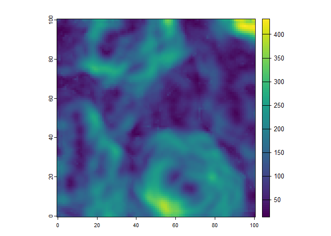
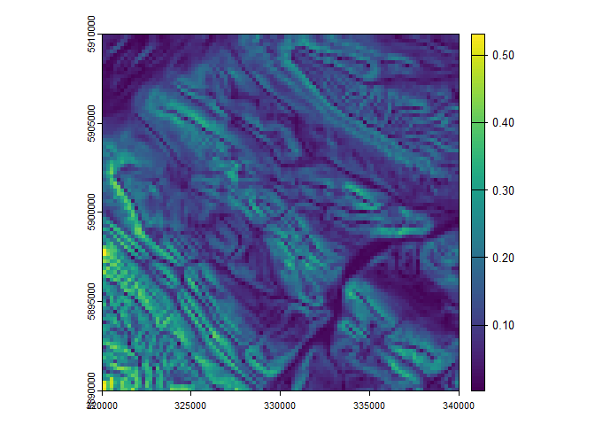

install.packages("Rsagacmd")Rsagacmd
 [
[


Rsagacmd - a package for linking R with SAGA-GIS
Rsagacmd provides an R scripting interface to the open-source SAGA-GIS (https://sourceforge.net/projects/saga-gis/) software. The current version has been tested using SAGA-GIS 2.3.2, 5.0.0 - 9.5.1 on Windows (x64), OS X and Linux.
Contents
Description
Rsagacmd provides a complete interface between R and SAGA-GIS. The package allows all SAGA-GIS tools and libraries to be used from within R. Further, the most common geospatial datatypes within R (rasters, simple features, and sp objects) are seamlessly passed between R and SAGA-GIS during geoprocessing operations.
Rsagacmd is unrelated to the RSAGA package (https://cran.r-project.org/package=RSAGA), which provides a command line parser and a subset of pre-defined functions to interface with SAGA-GIS. In contrast, Rsagacmd provides links with SAGA-GIS by dynamically generating R functions for every SAGA-GIS tool that is contained in the user’s installed SAGA-GIS version. This means that every SAGA-GIS tool is available for use within R (other than the interactive tools), and Rsagacmd always remains up-to-date with new versions of SAGA-GIS. Custom tools that have been created using SAGA’s toolchains (https://rohanfisher.wordpress.com/saga-tool-chains/) will also be accessible via Rsagacmd.
Package installation
CRAN version
Rsagacmd is now available on CRAN. To install this version run:
In your R session.
Development version
First install the devtools package:
install.packages("devtools")Then install Rsagacmd from github:
library(devtools)
install_github("stevenpawley/Rsagacmd")Usage
The primary function in Rsagacmd is the saga_gis function that returns an object containing all of the SAGA-GIS libraries and tools in the same structure as what is accessible within the GIS software itself. Each tool is nested within its respective library and can be accessed by:
library(Rsagacmd)
library(terra)
#> terra 1.7.78
# initiate a saga object
saga <- saga_gis(raster_backend = "terra")
# load the example data
srtm <- read_srtm()
# access the libraries and tools
saga$ta_morphometry$mass_balance_index(dem = srtm)
#> class : SpatRaster
#> dimensions : 400, 400, 1 (nrow, ncol, nlyr)
#> resolution : 100, 100 (x, y)
#> extent : 310009.9, 350009.9, 5879989, 5919989 (xmin, xmax, ymin, ymax)
#> coord. ref. : NAD83(CSRS) / Alberta 10-TM (Forest) (EPSG:3402)
#> source : file9b450b63638.sdat
#> name : file9b450b63638This facilitates an easier scripting experience by organizing the large number of SAGA-GIS tools (> 700) by their respective library. Each function’s syntax is the same as when using the SAGA-GIS command line tool directly except that Rsagacmd always uses lowercase arguments). Furthermore, because the arguments (called identifiers in SAGA-GIS) for many SAGA-GIS tools are not consistently named, the user can also take advantage of code autocompletion tools in RStudio, allowing for each tools’ inputs, outputs and options to be more easily recognized.
Passing geospatial and tabular data between R and SAGA-GIS
Rsagacmd aims to facilitate a seamless interface to the open-source SAGA-GIS by providing access to all SAGA-GIS geoprocessing tools in a R-like manner. In addition to mapping R functions to execute SAGA-GIS tools, Rsagacmd automatically handles the passing of geospatial and tabular data contained from the R environment to SAGA-GIS.
Rsagacmd uses the SAGA-GIS command line interface to perform geoprocessing operations. Therefore, all of the Rsagacmd tools allow paths to the input data to be used as arguments, if the data is stored in the appropriate file formats (GDAL-supported single-band rasters, OGR supported vector data, and comma- or tab-delimited text files for tabular data). In addition, Rsagacmd currently supports the following R object classes to pass data to SAGA-GIS, and to load the results back into the R environment:
Raster data handling is provided by the R terra package as the default backend. Raster-based outputs from SAGA-GIS tools are loaded as
SpatRasterobjects. For more details, see the ‘Handling of raster data’. Other raster backends can be specified when creating the link to SAGA-GIS usingsaga_gis(raster_backend = "stars")for example.Vector features that result from SAGA-GIS geoprocessing operations are output the format specified by the ‘vector_format’ arguments (default is ESRI Shapefile for SAGA-GIS versions < 7.0 and GeoPackage for newer versions) and are loaded into the R environment as simple features (
sf) objects. Different vector backends are also supported, including ‘sf’, ‘SpatVector’, and ‘SpatVectorProxy’, which can also be specified when initiating the link to SAGA-GIS usingsaga_gis(vector_backend = "SpatVector").Tabular data from SAGA-GIS tools are loaded as tibbles
The results from tools that return multiple outputs are loaded into the R environment as a named list of the appropriate R object classes.
Notes on handing multi-band raster datasets by Rsagacmd and SAGA-GIS
SAGA-GIS does not handle multi-band rasters and native SAGA GIS Binary file format (.sgrd) supports only single band data. Therefore when passing raster data to most SAGA-GIS tools using Rsagacmd, the data should represent single raster bands, specified as either the path to the single raster band. Subsetting of raster data is performed automatically by Rsagacmd in the case of when a single band from a SpatRaster or stars object is passed to a SAGA-GIS tool. This occurs in by either passing the filename of the raster to the SAGA-GIS command line, or by writing the data to a temporary file.
Combining SAGA-GIS tools with pipes
For convenience, non-optional outputs from SAGA-GIS are automatically saved to tempfiles if outputs are not explicitly stated, and then loaded as the appropriate R object (e.g., SpatRaster, sf object, or a tibble).
This means that Rsagacmd can be used with %>% to quickly chain together complex geoprocessing operations:
# Generate random terrain and save to file
dem <- saga$grid_calculus$random_terrain(
target_out_grid = tempfile(fileext = ".sgrd")
)
# Terrain ruggedness index and automatically save the result to a tempfile
tri <- saga$ta_morphometry$terrain_ruggedness_index_tri(dem = dem, radius = 3)
plot(tri)
This example will write the output terrain ruggedness index to a temporary file, and will automatically load the result into the R environment as a SpatRaster object. This was implemented for convenience, and so that the user can also create complex workflows that require very little code. It is also means that you can combine several processing steps with pipes:
library(sf)
#> Linking to GEOS 3.12.1, GDAL 3.8.4, PROJ 9.3.1; sf_use_s2() is TRUE
# read project area as a simple features object
prj_bnd <- st_polygon(list(matrix(
c(320000, 340000, 5880000, 5900000),
nrow = 1
)))
prj_bnd <-
st_bbox(c(xmin = 320000, xmax = 340000, ymin = 5890000, ymax = 5910000)) %>%
st_set_crs(3402) %>%
st_as_sfc()
prj_bnd <- st_as_sf(data.frame(area = "my area"), prj_bnd)
dem <- read_srtm()
# clip dem to shape, resample, and calculate land surface parameters
lsps <- dem %>%
saga$shapes_grid$clip_grid_with_rectangle(shapes = prj_bnd) %>%
aggregate(fact = 2, fun = "mean") %>%
saga$ta_morphometry$slope_aspect_curvature()
plot(lsps$slope)
In the above example, three tools are joined together using pipes, and only the land surface parameter grids are returned as SpatRaster objects. The intermediate processing steps are dealt with automatically by saving the outputs as tempfiles. When dealing with high-resolution and/or larger raster data, these tempfiles can start to consume a significant amount of disk space over a session. If required, temporary files can be cleaned during the session using:
saga_remove_tmpfiles(h = 0)
#> Removing Rsagacmd temporary files h=0
#> C:\Users\steve\AppData\Local\Temp\RtmpAbvFqa\file9b450b63638.sgrd
#> C:\Users\steve\AppData\Local\Temp\RtmpAbvFqa\file9b4711940a0.sgrd
#> C:\Users\steve\AppData\Local\Temp\RtmpAbvFqa\file9b45cde2f78.gpkg
#> C:\Users\steve\AppData\Local\Temp\RtmpAbvFqa\file9b444c72e35.sgrd
#> C:\Users\steve\AppData\Local\Temp\RtmpAbvFqa\file9b43b4e582e.sdat
#> C:\Users\steve\AppData\Local\Temp\RtmpAbvFqa\file9b46bfa7ee7.sgrd
#> C:\Users\steve\AppData\Local\Temp\RtmpAbvFqa\file9b47945c64.sgrd
#> C:\Users\steve\AppData\Local\Temp\RtmpAbvFqa\file9b437dd6460.sgrd
#> C:\Users\steve\AppData\Local\Temp\RtmpAbvFqa\file9b47bfffde.sgrd
#> C:\Users\steve\AppData\Local\Temp\RtmpAbvFqa\file9b46d7e4c96.sgrd
#> C:\Users\steve\AppData\Local\Temp\RtmpAbvFqa\file9b43c562733.sgrd
#> C:\Users\steve\AppData\Local\Temp\RtmpAbvFqa\file9b454b66c8a.sgrd
#> C:\Users\steve\AppData\Local\Temp\RtmpAbvFqa\file9b443e02197.sgrd
#> C:\Users\steve\AppData\Local\Temp\RtmpAbvFqa\file9b45cb7703b.sgrd
#> C:\Users\steve\AppData\Local\Temp\RtmpAbvFqa\file9b461fa570e.sgrd
#> C:\Users\steve\AppData\Local\Temp\RtmpAbvFqa\file9b46b4c1cd1.sgrd
#> C:\Users\steve\AppData\Local\Temp\RtmpAbvFqa\file9b423714c37.sgrdwhere h is minimum age (in number of hours) of tempfiles for removal, so h = 0 will remove all tempfiles that were automatically created by Rsagacmd.
The behaviour of automatically outputting results to tempfiles can be disabled for any specific tool by using .all_outputs = FALSE or can be disabled globally when the link to SAGA-GIS is created using saga_gis(all_outputs = FALSE). In this case, the output arguments need to be specified manually, e.g.:
tri <- saga$ta_morphometry$terrain_ruggedness_index_tri(
dem = dem,
radius = 3,
tri = tempfile(fileext = ".sgrd"),
.all_outputs = FALSE
)